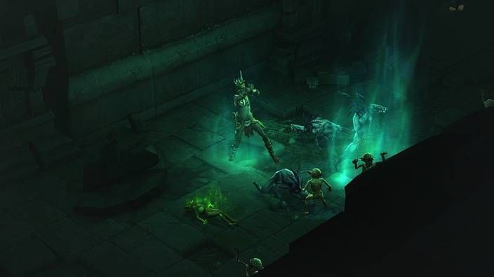
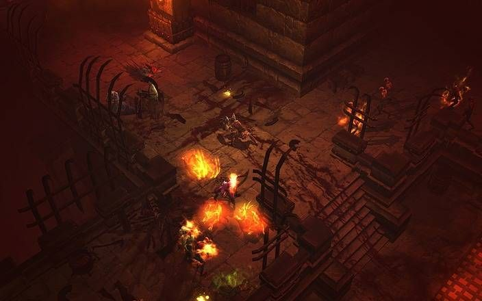
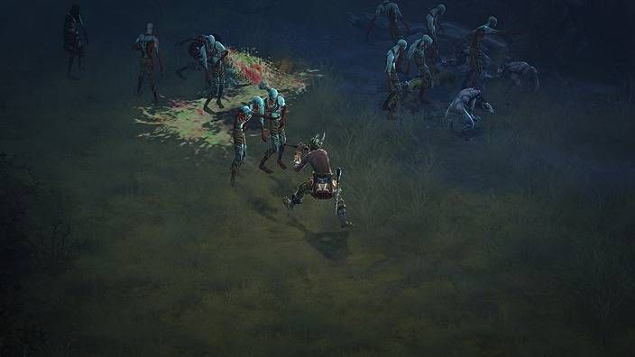

Witch doctors are spiritual warriors who summon dead souls and crawling creatures to do their bidding. By surrounding themselves with conjured zombies and vermin, witch doctors are free to assault their enemies with exploding skulls, acrid poison clouds, and wasting curses.
The ability to infect, slow and terrify their enemies gives witch doctors unprecedented control over a battlefield. They can manipulate opposing attacks and movements with debuffs and crowd control spells, rendering enemies easy prey for hungry pets. Witch doctors can also lay down fields of fire and venom that slowly leech life from advancing foes.
Although some witch doctors avoid melee combat in favor of augmenting their pets and crippling their enemies from afar, they are also more than capable of slaying weakened foes with their own hands.
“The spirits smile upon me.”
Only a select few men and women among the umbaru tribes can ascend to the hallowed role of witch doctor, for they must possess both a history of battle and a talent for communing with spirits. The latter ability belongs solely to those born with the touch of the Unformed Land – the invisible realm where the umbaru believe the spirits of the dead dwell once they have left Sanctuary behind.
When a man dies, witch doctors feel what they suspect is the breath of life leaving his cooling body. And, when calamity or genocide sends hundreds to their graves at once, witch doctors can sense their trembling and shrieking from beyond.
Witch doctors cannot cover their ears to the voices of the spirits. As the sounds of disquiet grow louder, their choice is made. They must restore the balance between their world and the Unformed Land, or watch the torment of generations past for the rest of their lives… and forever after.
The paint covering novice witch doctors’ bodies almost serves as better protection than the fur and cloth they gird themselves with.
Experienced witch doctors are able to piece together superior defenses, augmenting their armor with fine metal plates and wicked-looking masks.
Well-girded witch doctors strike fear in the hearts of their foes with armor covered in ancient skulls, feathers and horns. They’re also hard to kill, thanks to sharp body plating and custom shoulder guards.